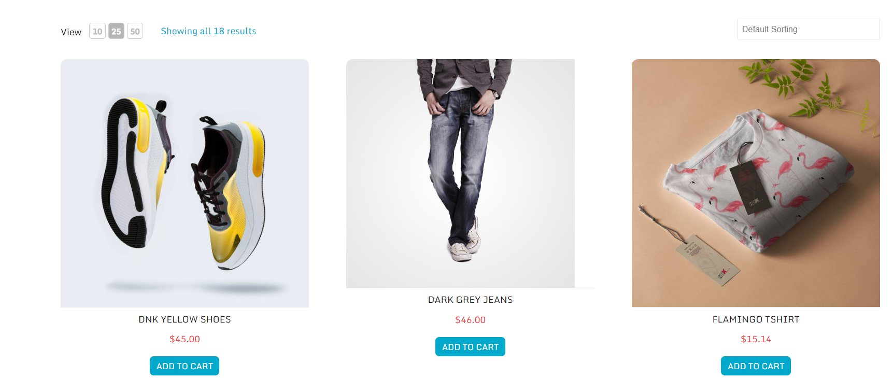
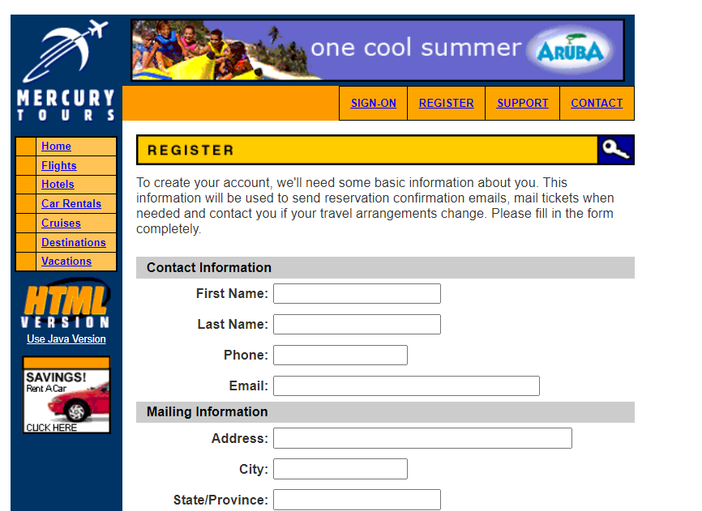

Experiencia Laboral
Utest - Plataforma de testing freelance
2018 - Actualidad
Realizo testing de aplicaciones y desarrollo web, asegurándome la calidad del software mediante la verificación meticulosa del software, como ser: - Redacción y ejecución de casos de prueba y reportes de bugs (en idioma inglés). - Realización de testing exploratorio (web y mobile). - Comunicación efectiva en tiempo y forma con Test Team Leaders y Test Engineers.
Experiencia Laboral
Administración Pública Provincial - Gobierno de Chaco
2009 - Actualidad
Realizo tareas administrativas, como ser: - Redacción, edición y corrección de diversos tipos de documentos, incluyendo instrumentos legales, memorandums, presentaciones e informes del área, asegurando una comunicación precisa y profesional con las partes interesadas. - Coordinación de reuniones y visitas a empresas para asesoramiento sobre programas provinciales.
Estudios
2024-Presente
Titulo: Técnica Universitario en Programación - UTN-FRSR
Cursando la Tecnicatura. Finalizando el primer semestre con la adquisición de nuevas herramientas: Python, Java, Javascript, html, Css, Github e Inteligencia Artificial.
Estudios
2015-2019
Titulo: Técnica Superior en Administración de Empresas - C.E.N.T N°51
Egresada del Instituto de Educación Superior CENT N°51, en donde adquirí habilidades para gestionar y coordinar actividades mediante la implementación de metodologías ágiles (Scrum), llevando registros detallados y optimizando recursos y procesos. En el proceso de aprendizaje reforcé mis habilidades para planificar, organizar y supervisar diferentes tipos de eventos en las organizacion, y posteriormente recolectar analizar e interpretar datos para toma de decisiones informada.
Proyectos
Proyecto Integrador Primer Semestre
Trabajamos con pseudocódigo utilizando el programa PSeInt. Realizamos los clásicos juegos del Ahorcado y el Ta-Te-Tí. Intregamos todo lo dado: ciclos, condicionales, arreglos, matrices y funciones.
Tecnologias: PSeInt, Lenguajes: python, Javascript y Java

Find Bugs
Página de práctica para testers, en donde se aprende a indentificar, documentar y reportar errores con precisión. Se demuestran casos reales de estudio para ganar experiencia en la detección de fallos y problemas que surgen en las págfinas web. Se participa de manera práctica como aplicar conocimientos en un entorno controlado.
Manual testing - Test reports

Demo Gurú
Prácticas realizadas con el objetivo de mejorar las habilidades visualización y clasificación de bugs de acuerdo a su severidad, prioridad y tipos.
Manual testing - Test reports